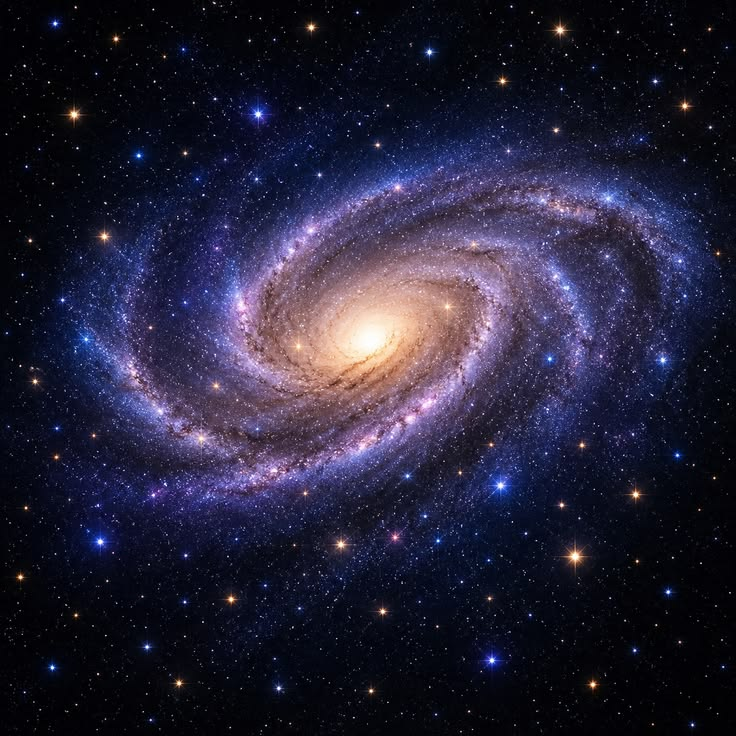
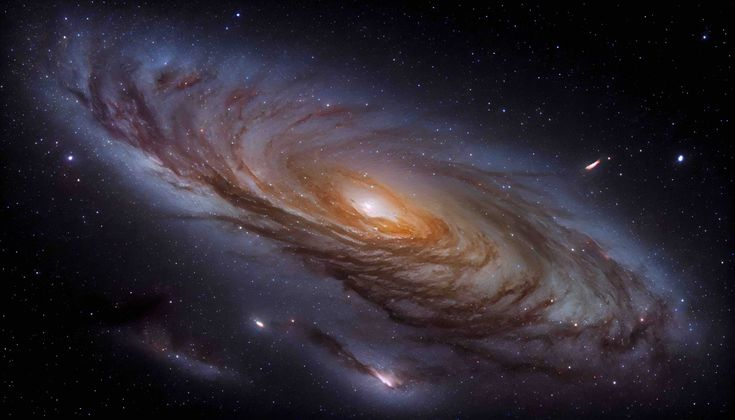
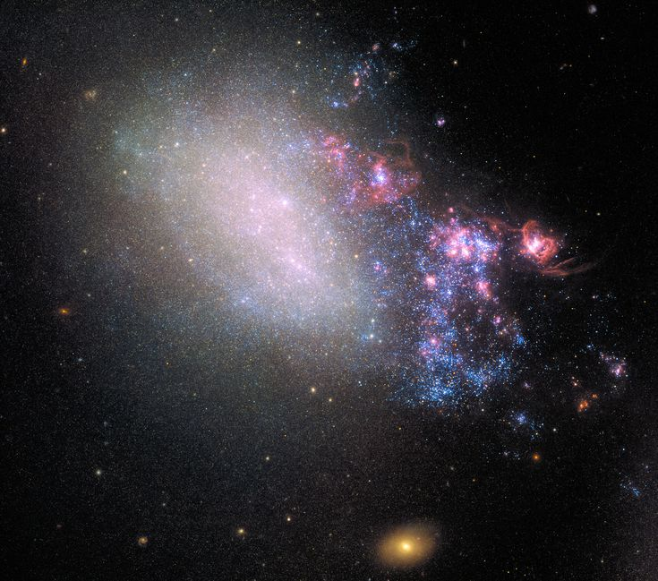
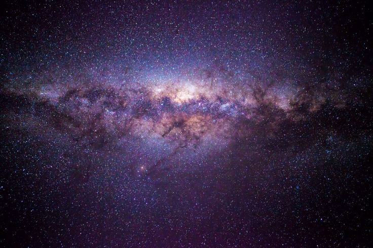

ASTRONOMY 101
Galaksi

Apa Itu Galaksi?
Galaksi adalah kumpulan besar bintang, gas, debu, dan materi lain yang terikat bersama oleh gravitasi. Di dalam sebuah galaksi terdapat berbagai macam objek astronomi, termasuk bintang, planet, nebula, dan objek lainnya.
Ukuran galaksi sangat beragam. Ada galaksi yang memiliki jumlah bintang yang relatif sedikit, tetapi ada juga galaksi yang memiliki miliaran bahkan lebih banyak bintang. Jarak antara satu galaksi dengan galaksi lainnya juga dapat mencapai jutaan tahun cahaya.
Galaksi bukan hanya kumpulan bintang yang berada di satu tempat. Gravitasi berperan penting dalam menjaga berbagai objek tersebut tetap menjadi bagian dari sistem galaksi.
Jenis-Jenis Galaksi
Galaksi memiliki berbagai bentuk dan karakteristik. Berdasarkan bentuknya, galaksi umumnya dapat dikelompokkan menjadi galaksi spiral, galaksi elips, dan galaksi tidak beraturan.
Galaksi Spiral

Galaksi spiral memiliki bentuk seperti piringan dengan lengan-lengan spiral yang mengelilingi bagian pusatnya. Lengan spiral tersebut dapat menjadi tempat terbentuknya banyak bintang baru.
Galaksi Bima Sakti yang menjadi tempat Tata Surya kita berada termasuk ke dalam kelompok galaksi spiral. Selain Bima Sakti, terdapat banyak galaksi spiral lain yang dapat diamati di alam semesta.
Galaksi Elips

Galaksi elips memiliki bentuk yang lebih bulat atau lonjong dan tidak memiliki lengan spiral seperti galaksi spiral. Bentuknya dapat bervariasi dari hampir bulat hingga sangat lonjong.
Galaksi elips umumnya didominasi oleh bintang-bintang yang lebih tua dan memiliki lebih sedikit gas serta debu dibandingkan banyak galaksi spiral. Karena itu, pembentukan bintang baru biasanya lebih rendah.
Galaksi Tidak Beraturan

Galaksi tidak beraturan atau irregular galaxy tidak memiliki bentuk yang jelas seperti galaksi spiral maupun galaksi elips.
Bentuk yang tidak beraturan dapat dipengaruhi oleh interaksi gravitasi dengan galaksi lain. Interaksi tersebut dapat mengubah struktur sebuah galaksi dan menghasilkan bentuk yang tidak teratur.
Bima Sakti

Tata Surya kita berada di dalam Galaksi Bima Sakti atau Milky Way. Bima Sakti merupakan galaksi spiral yang memiliki jumlah bintang yang sangat banyak.
Matahari bukan berada di pusat Bima Sakti. Tata Surya kita berada di salah satu bagian lengan spiral galaksi, cukup jauh dari pusat galaksi.
Ketika melihat langit malam yang sangat gelap, bagian Bima Sakti dapat terlihat seperti pita cahaya yang membentang di langit. Cahaya tersebut berasal dari banyak bintang yang berada di dalam galaksi kita.
Galaksi dan Tata Surya
Galaksi dan Tata Surya merupakan dua hal yang berbeda. Tata Surya adalah sistem yang terdiri dari Matahari dan berbagai objek yang mengorbitnya, seperti planet, asteroid, dan komet.
Sementara itu, galaksi memiliki skala yang jauh lebih besar. Tata Surya hanyalah salah satu bagian kecil dari Galaksi Bima Sakti, sedangkan Bima Sakti sendiri hanyalah salah satu dari sangat banyak galaksi di alam semesta.
Bagaimana Galaksi Terbentuk?
Galaksi terbentuk melalui proses yang berlangsung dalam waktu yang sangat panjang. Gravitasi menyebabkan gas, debu, dan materi berkumpul sehingga membentuk struktur yang semakin besar.
Seiring waktu, proses pembentukan dan perubahan galaksi terus berlangsung. Galaksi juga dapat berinteraksi dengan galaksi lain melalui gaya gravitasi. Dalam beberapa kasus, dua galaksi dapat mengalami penggabungan dan membentuk struktur galaksi yang baru.
🌌 FUN FACT
Tata Surya kita bukan berada di pusat Galaksi Bima Sakti. Matahari berada sekitar 26.000 tahun cahaya dari pusat galaksi dan mengorbit pusat Bima Sakti bersama sistem bintang lainnya.